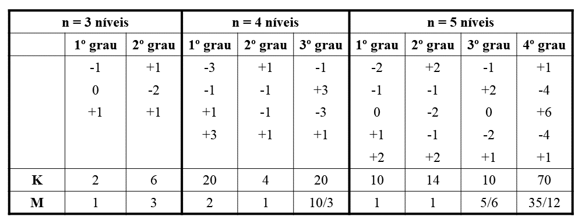
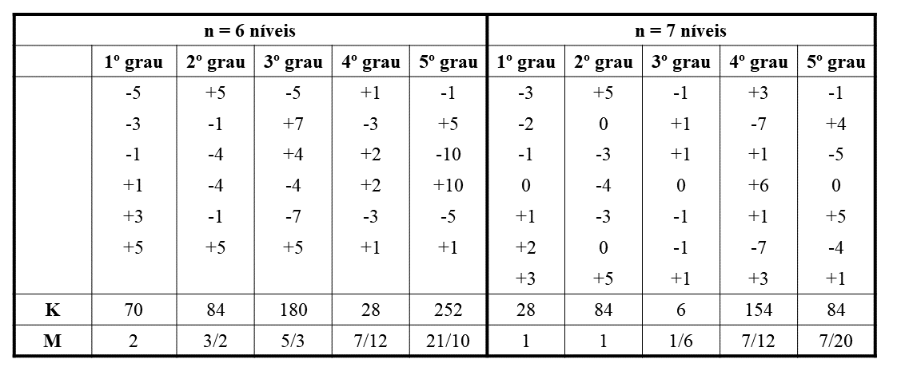
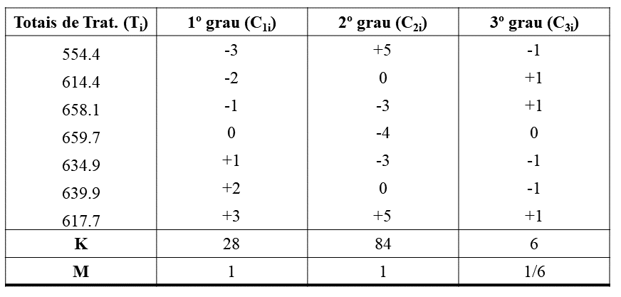
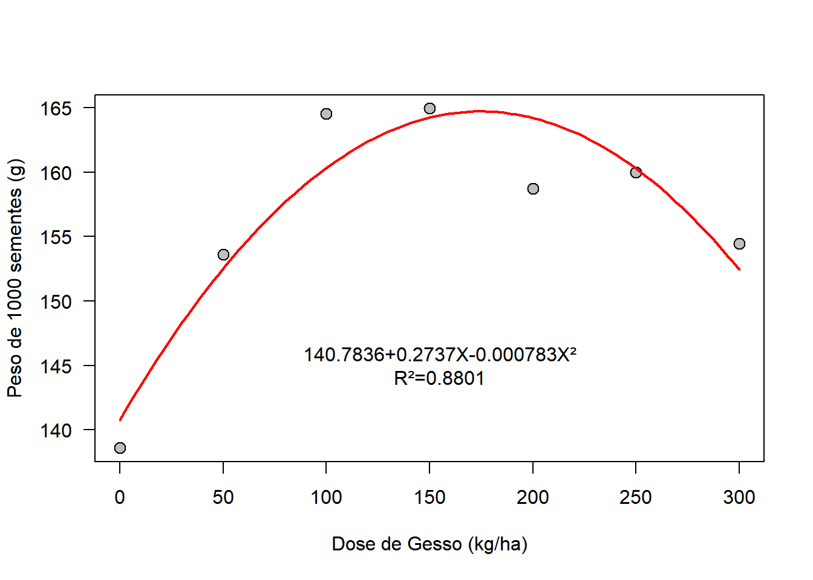

Capítulo 15 Análise de Regressão por Polinômios Ortogonais
15.1 Introdução
Nos experimentos em que os tratamentos são quantitativos, como por exemplo, níveis crescentes de um adubo, doses crescentes de um inseticida, etc, muitas vezes existe uma correspondência funcional, denominada equação de regressão, que relaciona os valores dos tratamentos (X) com os dados analisados (Y).
Por exemplo, essa dependência pode ser notada no caso seguinte,onde X representa oas doses de um adubo (\(kg\;h^{-1}\)) e y a produção de milho (\(kg\;h^{-1}\)).
| X | 0 | 25 | 50 | 75 | 100 |
|---|---|---|---|---|---|
| Y | 2100 | 2600 | 3000 | 3550 | 4150 |
Verificamos, portanto ,que há uma tendência de aumento na produção à medida que aumentamos a quantidade de adubo aplicada.
Vejamos então, como fazer a análise de variância para o estudo da regressão. O método utilizado é denominado de método dos polinômios ortogonais, e é de fácil aplicação quanto os níveis de X são equidistantes, poixs permitem a utilização de coeficientes obtidos em tabelas.
15.2 Obtenção da análise de variância, estudando-se os efeitos da regressão
Para estudo da regressão, vamos utilizar os dados do trabalho: “Efeito de doses de gesso na cultura do feijoeiro (Phaseolu vulgaris L.)”, realizado por RAGAZZI (1979). Neste trabalho foram utilizadas 7 doses de gesso 0, 50, 100, 150, 200, 250, e 300 \(kg\;ha^{-1}\). Os resultados obtidos para peso de 1000 sementes, em gramas, são apresentados a seguir:
| Tratamentos | Rep. 1| | Rep. 2 | Rep. 3 | Rep. 4 | Totais |
|---|---|---|---|---|---|
| 0 | 134.8| 13 | 139.7| | 147.6| | 132.3| | 554.4| |
| 50 | 161.7| 1 | 157.7 |15 | 150.3 | 144.7 |6 | 614.4 |
| 100 | 160.7 |172 | 172.7 | | 163.4 | 161.3 |6 | 658.1 |
| 150 | 169.8 |168 | 168.2 | | 160.7 | 161.0 |6 | 659.7 |
| 200 | 165.7 |160 | 160.0 | | 158.2 | 151.0 |6 | 634.9 |
| 250 | 171.8 |157 | 157.3 | | 150.4 | 160.4 |6 | 639.9 |
| 300 | 154.5 |160 | 160.4 | | 148.8 | 154.0 | 617.7| |
| Totais | 4379.1 |
A análise de variância preliminar será realizada de acordo com o delineamento experimental utilizado. O Ensaio foi montado de acordo com o delineamento inteiramente casualizado, e portanto, a análise de variância preliminar, obtido de maneira usual, foi a seguinte: \[ SQ_{Total} = (134.8^2+139.7^2+\cdots+154.0^2)-\frac{4379.1^2}{7\cdot4}=2828.17 \\ \\ SQ_{Trat}=\frac{1}{4}[554.4^2+614.4^2+\cdots+617.7^2]-\frac{4379.1^2}{7\cdot4} = 1941.83 \\ \\ SQ_{Res} = SQ_{Total}-SQ_{Trat}=2828.17-1941.83=886.34 \]
Quadro de análise de variância preliminar:
| Causas de Variação | GL | SQ | QM | F |
|---|---|---|---|---|
| Tratamentos | 6 | 1941.83 | 323.64 | 7.67** |
| Resíduo | 21 | 886.34 | 42.21 | – |
| Total | 27 | 2828.17 | – | – |
Conclusão: O teste F foi significativo ao nível de \(1\%\) de probabilidade, logo, rejeitamos a hipótese da nulidade (\(H_0\)), e concluímos que as doses de gesso aplicadas possuem efeitos diferentes sobre o peso de 1000 sementes.
No entanto, um caso como este, em que os tratamentos são quantitativos, e em mais de 2 níveis, uma análise mais detalhada deve levar em conta a regressão, desdobrando-se os 6 graus de liberdade de tratamentos em:
Regressão Linear……..1 GL
Regressão Quadrática…1 GL
Regressão Cúbica……..1 GL
Regressão de 4º grau…1 GL
Regressão de 5º grau…1 GL
Regressão de 6º grau…1 GL
—————————————
(Tratamentos)…………(6) GL
Porém, as regressões de grau maior que 3º não tem interesse prático, de modo que, na análise de variância, podemos considerar as regress~es de graus maior que o 3º como uma única causa de variação, que denominamos de Desvios da Regressão. Assim, no nosso exemplo, temos:
| Causas de Variação | GL |
|---|---|
| Regressão Linear | 1 |
| Regressão Quadrática | 1 |
| Regressão Cúbica | 1 |
| Desvios da Regressão | 3 |
| (Tratamentos) | (6) |
| Resíduo | 21 |
| Total | 27 |
Esta decomposição pode ser feita pelo métido dos polinômios ortogoais, e é de fácil aplicação quando as quantidades que determinam os tratamentos são igualmente espaçadas (equidistantes), o que ocorre no caso em estudo (0, 50, 100, 150, 20, 250, 300). Neste casos, os coeficientes dos polinômios ortogonais são obtidos em tabelas, como a seguintes:
15.3 Coeficientes de interpolação de polinômios ortogonais


\[ \begin{align} & P_1 = x\;\;\;\;\;\;\;\;\;\;\;P_2=x^2-\frac{n^2-1}{12}\;\;\;\;\;\;\;\;\;\;\;P_3=x^3-\frac{3n^2-7}{20}x \\ \\ & onde, \\ \\ & x=\frac{X-\bar{X}}{q} \end{align} \]
Para facilitar os cálculos, montamos o quadro seguinte, onde aparecem os totais de tratamentos (\(T_i\)) e os coeficientes dos polinômios ortogonais (\(C_{ji}\)) para cada componente:
No nosso exemplo, utilizaremos os coeficientes para n=7 níveis:

Com este coeficientes (\(C_{ji}\)) e Totais (\(T_i\)), estabelecemos contrastes ortogonais, sendo um contraste para o efeito da Regressão Linear (1º grau), outro para a refressão Quadrática (2º grau) e outro para a Regressão Cúbica (3º grau).
As tabelas de coeficientes dos polinômios ortogonais nos fornecem ainda, a soma dos quadrados dos coeficientes (K), e uma constante (M) que deverá ser utilizada na determinação da equação de regressão.
Então, o contraste correspondente à regressão de grau j será:
\[ Y_{Grau\;j} = \sum_{i=1}^IC_{ji}T_{i} \]
E a soma de quadrados correspondente, será:
\[ SQ_{Reg.Grau\;j} = \frac{\hat{Y}_{Grau\;j}^2}{r\cdot K_j} \]
onde,
\(\hat{Y}_{Grau\;j}\) = Estimativa do conraste para a regressão de grau j.
\(r\)=número de repetições com que foram calculados os totais \(T_i\).
\(K_j=\sum_{i=1}^IC_{ji}^2\) = soma dos quadrado dos coeficientes do contraste para a regressão de grau j.
Portanto, no nosso exemplo, temos:
- Regressão Linear ou de Grau 1:
\[ \begin{align} & Y_{\text{Reg. Linear}} = \sum_{i=1}^IC_{1i}T_i=-3T_1-2T_2-1T_3+0T_4+1T_5+2T_6+3T_7 \\ & \hat{Y}_{\text{Reg. Linear}} = -3(554.4)-2(614.4)-1(658.1)+0(659.7)+1(634.9)+2(639.9)+3(617.7) \\ & \hat{Y}_{\text{Reg. Linear}} = 217.7\;g \\ & SQ_{Reg.Linear}=\frac{\hat{Y}_{\text{Reg. Linear}}^2}{r\cdot K_1}=\frac{217.7^2}{4\cdot28}=423.15 \end{align} \]
- Regressão Quadrádica ou de Grau 2:
\[ \begin{align} & Y_{\text{Reg.Quadrática}} = \sum_{i=1}^IC_{2i}T_i=5T_1+0T_2-3T_3-4T_4-3T_5+0T_6+5T_7 \\ & \hat{Y}_{\text{Reg.Quadrática}} = 5(554.4)+0(614.4)-3(658.1)-4(659.7)-3(634.9)+0(639.9)+5(617.7) \\ & \hat{Y}_{\text{Reg.Quadrática}} = -657.3\;g \\ & SQ_{Reg.Quadrática}=\frac{\hat{Y}_{\text{Grau.2}}^2}{r\cdot K_2}=\frac{(-657.3)^2}{4\cdot84}=1285.84 \end{align} \]
- Regressão Cúbica ou de Grau 3:
\[ \begin{align} & Y_{\text{Reg.Cúbica}} = \sum_{i=1}^IC_{3i}T_i=-1T_1+1T_2+1T_3+0T_4-1T_5-1T_6+1T_7 \\ & \hat{Y}_{\text{Reg.Cúbica}} = -1(554.4)+1(614.4)+1(658.1)+0(659.7)-1(634.9)-1(639.9)+1(617.7) \\ & \hat{Y}_{\text{Reg.Cúbica}} = 61.0\;g \\ & SQ_{Reg.Cúbica}=\frac{\hat{Y}_{\text{Grau.3}}^2}{r\cdot K_3}=\frac{155.04^2}{4\cdot6}=155.04 \end{align} \] d) Desvios da Regressão:
\[ SQ_{Desvios\;da\;Regressão}= SQ_{Trat.}-SQ_{Reg.Linear}-SQ_{Reg.Quadrática}-SQ_{Reg.Cúbica} \\ SQ_{Desvios\;da\;Regressão}= 1941.83-423.15-1285.84-155.04 \\ SQ_{Desvios\;da\;Regressão}= 77.80 \]
Com estas somas de quadrado, podemos montar
| Causas de Variação | GL | SQ | QM | F |
|---|---|---|---|---|
| Regressão Linear | 1 | 423.15 | 423.15 | 10.02** |
| Regressão Quadrática | 1 | 1285.84 | 1285.84 | 30.46** |
| Regressão Cúbica | 1 | 155.04 | 155.04 | 3,67 |
| Desvios da Regressão | 3 | 77.80 | 25.93 | 0.61 |
| (Tratamentos) | 6 | (1941.83) | – | – |
| Resíduo | 21 | 886.34 | 42.21 | – |
| Total | 27 | 2828.17 | – | – |
Valores de F da tabela (\(1\times21GL\)): \(\begin{cases} 5\%=4.32 \\ 1\%=8.02 \end{cases}\)
Valores de F da tabela (\(3\times21GL\)): \(\begin{cases} 5\%=3.07 \\ 1\%=4.87 \end{cases}\)
CONCLUSÃO:
Os testes F para a regressão linear e regressão quadrática foram significativos ao nível de \(1\%\) de probabilidade, indicando que é possível estabelecer uma relação funcional entre a dose de gesso (\(X\)) e o peso de 1000 sementes do feijoeiro (\(Y\)).
A equação de regressão que melhor se ajusta aos dados é a correspondente à REGRESSÃO DE MAIS ALTO GRAU cujo teste F soi significativo.
Assim, sendo, no nosso exemplo, a equação que melhor se ajusta é a de 2º grau (Quadrática).
Quando o teste F para Desvios da Regressão for significativo, isto indica que existe alguma regressão significativa de grau maior que o 3º e, se tivermos interesse em estudá-la, devemos desdobrar os graus de liberdade de Desvio da Regressão.
15.4 Obtendo a Equação de Regressão
A equação de regressão, até um certo grau \(p\), tem a seguinte expressão:
\[ \hat{Y}=\bar{Y}+\hat{b}_1M_1P_1+\hat{b}_2M_2P_2+\cdots+\hat{b}_pM_pP_p \]
onde:
\[ \bar{Y}=\frac{\sum_{i=1}^IT_i}{I\cdot r}=\frac{G}{I \cdot r} \\ \\ \hat{b}_1=\frac{\sum_{i=1}^IC_{1i}T_i}{r \cdot K_1} = \frac{\hat{Y}_{Reg.Linear}}{r \cdot K_1} \\ \\ \hat{b}_2=\frac{\sum_{i=1}^IC_{2i}T_i}{r \cdot K_2} = \frac{\hat{Y}_{Reg.Quadrática}}{r \cdot K_2} \\ \\ \cdots \\ \hat{b}_p=\frac{\sum_{i=1}^IC_{pi}T_i}{r \cdot K_p} = \frac{\hat{Y}_{Reg.Grau\;p}}{r \cdot K_p} \]
e os \(P_j\) são os polinômios ortogonais expressos literalmente em relação à \(x\) (obtidos em tabelas):
\[ P_1 = x\;\;\;\;\;\;\;\;\;\;\;P_2=x^2-\frac{n^2-1}{12}\;\;\;\;\;\;\;\;\;\;\;P_3=x^3-\frac{3n^2-7}{20}x \\ \]
No nosso exemplo o teste F indicou que a equação que melhor se ajusta aos dados é a do 2º grau, e portanto, temos:
\[ \bar{Y}=\frac{\sum_{i=1}^IT_i}{I\cdot r}=\frac{4379.1}{7 \cdot 4}=156.3964 \\ \hat{b}_1= \frac{\hat{Y}_{Reg.Linear}}{r \cdot K_1}=\frac{217.7}{4\cdot28}=1.9438 \\ M_1 = 1 \\ P_1=x\\ \hat{b}_2= \frac{\hat{Y}_{Reg.Quadrática}}{r \cdot K_2}=\frac{-657.3}{4\cdot84}=-1.9563 \\ M_2 = 1 \\ P_2=x^2-\frac{n^2-1}{12} \text{, onde }n\text{ = nº de níveis de X.} \\ \] No exemplo, temos 7 níveis de X, e portanto, o valor de \(P_2\) será:
\[ P_2=x^2-\frac{7^2-1}{12}=x^2-4 \]
Então, a equação de regressão será:
\[ \hat{Y}=\bar{Y}+\hat{b}_1M_1P_1+\hat{b}_2M_2P_2 \\ \hat{Y}=156.3964+1.9438x-1.9563(x^2-4) \\ \hat{Y}= 164.2216+1.9438x-1.9563x^2 \]
Esta equação foi obtida utilizando-se, para facilitar os cálculos, uma variável auxiliar:
\(x=\frac{X-\bar{X}}{q}\), onde \(\bar{X}\) é a média dos valores de \(X\) e \(q\) é a diferença entre dois níveis consecutivos de X.
Assim sendo, devemos expressar a equação de regressão em função de X. No noso exemplo, temos:
\[ \bar{X}=\frac{0+50+100+150+200+250+300}{7}=150 \\ q=50 \] Então,
\(x=\frac{X-150}{50}\)
Substituindo-se a expressão de \(x\) na equação de regressão, teremos
\[ \hat{Y}= 164.2216+1.9438 \left( \frac{X-150}{50} \right) -1.9563 \left(\frac{X-150}{50}\right)^2 \\ \hat{Y}= 164.2216+1.9438 \left( \frac{X-150}{50} \right) -1.9563 \left(\frac{X^2-300X+150^2}{50^2}\right) \\ \hat{Y}= 164.2216+0.0389X-5.8314-0.000783X^2+0.2348X-17.6067 \\ \hat{Y}= 140.7835+0.2737X-0.000783X^2, \;para\;0 \leq X \leq 300 \]
onde, \(\hat{Y}\) é o Peso de 1000 sementes (\(g\)).
\(X\) é a dose de gesso aplicada (\(kg\;ha^{-1}\)).
15.5 Cálculo do Coeficiente de Determinação (R²)
O coeficiente de determinação fornece uma medida do grau de ajuste da equação de regressão estimada. Ele varia entre 0 e 1 e quanto mais próximo de 1 maior o grau de ajuste da equação de regressão estimada. O valor do coeficiente de determinação para uma regressão polinomial de grau p, pode ser obitido por:
\[ R^2= \frac{SQ_{Reg.Grau\;1}+SQ_{Reg.Grau\;2}+\cdots+SQ_{reg.Grau\;p}}{SQ_{Trat}} \] então, como nosso exemplo, a equação ajustada foi do segundo grau, portanto, o coeficiente de determinação será:
\[ R^2= \frac{SQ_{Reg.Grau\;1}+SQ_{Reg.Grau\;2}}{SQ_{Trat}}=\frac{423.15+1285.84}{1941.83} =0.8801 \]
Portanto, \(88.01\%\) da variação do peso de 1000 sementes é explicada pela regressão do peso de 1000 sementes em função da dose de gesso aplicada.
15.6 Gráfico da Regressão Ajustada
Podemos fazer uma verificação do ajuste da equação de regressão, calculando os valores esperados de (\(\hat{Y}_i\)) por meio da equação de regressão ajustada, e os valores observados (\(\bar{Y}_{i\;Obs}\)) por meio das médias dos tratamentos.
Devemos verificar que \(\sum_{i=1}^I\bar{Y}_{i~Obs}=\sum_{i=1}^I\hat{Y}_{i}\). estes valores podem também ser utilizados para a construção do gráfico de regressão ajustada.
No nosso exemplo, temos:
| Dose de Gesso (X) | \(\bar{Y}_{i~Obs}\) | \(\hat{Y}_i\) |
|---|---|---|
| 0 | 138.60 | 140.78 |
| 50 | 153.60 | 152.51 |
| 100 | 164.53 | 160.32 |
| 150 | 164.93 | 164.22 |
| 200 | 158.73 | 164.20 |
| 250 | 159.98 | 160.27 |
| 300 | 154.43 | 152.42 |
| Total | 1094.80 | 1094.72 |

require(ExpDes.pt)
caminho<-"https://raw.githubusercontent.com/arpanosso/ExpAgr_2020/master/dados/feijaoREG.txt"
d<-read.table(caminho,h=T)
# Análise de Variância
dic(d$trat,d$y,quali = FALSE)## ------------------------------------------------------------------------
## Quadro da analise de variancia
## ------------------------------------------------------------------------
## GL SQ QM Fc Pr>Fc
## Tratamento 6 1941.83 2 7.668 0.00018763
## Residuo 21 886.34 3
## Total 27 2828.17 1
## ------------------------------------------------------------------------
## CV = 4.15 %
##
## ------------------------------------------------------------------------
## Teste de normalidade dos residuos
## Valor-p: 0.5471519
## De acordo com o teste de Shapiro-Wilk a 5% de significancia, os residuos podem ser considerados normais.
## ------------------------------------------------------------------------
##
## ------------------------------------------------------------------------
## Teste de homogeneidade de variancia
## valor-p: 0.3337639
## De acordo com o teste de bartlett a 5% de significancia, as variancias podem ser consideradas homogeneas.
## ------------------------------------------------------------------------
##
## Ajuste de modelos polinomiais de regressao
## ------------------------------------------------------------------------
##
## Modelo Linear
## =========================================
## Estimativa Erro.padrao tc valor.p
## -----------------------------------------
## b0 150.5652 2.2134 68.0255 0
## b1 0.0389 0.0123 3.1664 0.0046
## -----------------------------------------
##
## R2 do modelo linear
## --------
## 0.217915
## --------
##
## Analise de variancia do modelo linear
## =========================================================
## GL SQ QM Fc valor.p
## ---------------------------------------------------------
## Efeito linear 1 423.1544 423.1544 10.03 0.00465
## Desvios de Regressao 5 1,518.6780 303.7356 7.2 0.00046
## Residuos 21 886.3375 42.2066
## ---------------------------------------------------------
## ------------------------------------------------------------------------
##
## Modelo quadratico
## =========================================
## Estimativa Erro.padrao tc valor.p
## -----------------------------------------
## b0 140.7839 2.8354 49.6527 0
## b1 0.2736 0.0443 6.1812 0
## b2 -0.0008 0.0001 -5.5196 0.00002
## -----------------------------------------
##
## R2 do modelo quadratico
## --------
## 0.880095
## --------
##
## Analise de variancia do modelo quadratico
## ===========================================================
## GL SQ QM Fc valor.p
## -----------------------------------------------------------
## Efeito linear 1 423.1544 423.1544 10.03 0.00465
## Efeito quadratico 1 1,285.8430 1,285.8430 30.47 2e-05
## Desvios de Regressao 4 232.8346 58.2087 1.38 0.27505
## Residuos 21 886.3375 42.2066
## -----------------------------------------------------------
## ------------------------------------------------------------------------
##
## Modelo cubico
## =========================================
## Estimativa Erro.padrao tc valor.p
## -----------------------------------------
## b0 138.2423 3.1302 44.1645 0
## b1 0.4431 0.0989 4.4812 0.0002
## b2 -0.0023 0.0008 -2.8551 0.0095
## b3 0.000003 0 1.9166 0.0690
## -----------------------------------------
##
## R2 do modelo cubico
## --------
## 0.959938
## --------
##
## Analise de variancia do modelo cubico
## ===========================================================
## GL SQ QM Fc valor.p
## -----------------------------------------------------------
## Efeito linear 1 423.1544 423.1544 10.03 0.00465
## Efeito quadratico 1 1,285.8430 1,285.8430 30.47 2e-05
## Efeito cubico 1 155.0417 155.0417 3.67 0.069
## Desvios de Regressao 3 77.7930 25.9310 0.61 0.61327
## Residuos 21 886.3375 42.2066
## -----------------------------------------------------------
## ------------------------------------------------------------------------# Construção do gráfico
X<-seq(0,300,50)
Y<-tapply(d$y, d$trat, mean)
plot(Y~X,
las=1,
pch=21,col="black",bg="gray",cex=1.3,
xlab="Dose de Gesso (kg/ha)",
ylab="Peso de 1000 sementes (g)"
);curve(140.7836+0.2737*x-0.000783*x^2,add=TRUE,col="red",lwd=2)
text(155,145,"140.7836+0.2737X-0.000783X²\nR²=0.8801")
Gráfico 1. relação entre o Peso de 1000 sementes e a dose de gesso aplicada.